申请分配页的时候，页分配器首先尝试低水线分配页。如果使用低水线分配失败，说明内存轻微不足，页分配器将会唤醒内存节点的页回收内核线程，异步回收页，然后尝试使用最低水线分配页。如果使用最低水线分配页也分配失败，说明内存严重不足，页分配器将会直接回收页。
物理页根据是否有存储设备支持分为两类：
1）交换支持的页：没有存储设备支持的页，包括匿名页一级tmpfs文件系统（内存中的文件系统）的文件页和进程在修改私有的文件映射时复制生成的匿名页。
2）存储设备支持的文件页。
针对不同的物理页，采用不同的回收策略。
1）交换支持的也：采用页交换的方法，先把页的数据写入到交换区，然后释放物理页。
2）存储设备支持的文件页：如果是干净的页，即把文件从存储设备读到内存以后没有修改过，可以直接释放；如果是脏页，即把文件从存储设备读到内存以后修改过，那么先歇会到存储设备，然后释放物理页。
页回收算法还会回收slab缓存，使用专用的slab缓存的内核模块可以使用函数register_shinker注册收缩器，页回收算法抵用所有收缩器的函数来释放对象。
根据什么原则选择回收的物理页？配合使用LRU（Least Recently Used最近最少使用）算法选择最近最少使用的额物理页。
回收页的时候如果物理页被映射到进程的虚拟地址空间，那么需要从页表中删除虚拟页到物理页的映射。怎么知道物理页被映射到哪些虚拟页‘？ 需要通过反向映射到数据结构，虚拟页映射到物理页时正向映射，物理页映射到虚拟页时反向映射。
页回收算法使用LRU算法选择回收的也，如下图所示，每个内存节点的pglist_data实例有一个成员lruvec，称为LRU向量，LRU向量包含5条LRU链表。
1）不活动匿名页LRU链表，用来链接不会动的匿名页，即最近访问频率最低的匿名页。
2）活动匿名页LRU链表，用来链接活动的匿名页，即最近访问频率最高的匿名页。
3）不活动文件页LRU链表，用来链接不活动的文件页，即最近访问频率低的文件页。
4）活动文件页LRU链表，用来链接活动的文件页，即最近访问频率高的文件页。
5）不可回收LRU链表，用来链接使用mlock锁定在内存中、不允许回收的物流页。
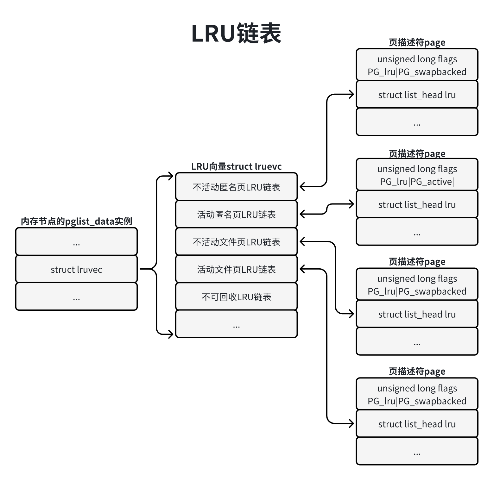
在LRU链表中，物理页描述的特征如下：
1）页描述符设置PG_lru标志位，表示物理页在LRU链表中。
2）页描述符通过成员lru加入LRU链表中。
3）如果是交换支持的物理页，页描述符会设置PG_swapbacked标志位。
4）如果活动的物理页，页描述符会设置PG_active标志位。
5）如果是不可回收的物理页，页描述符会设置PG_uneictable标志位。
每条LRU链表中的物理页按访问时间从大到小排序，链表首部的物理页的访问时间离当前最近，物理页从LRU链表的首部加入，页回收算法从不活动LRU链表的尾部取物理页回收，从活动LRU链表的尾部取物理页并移动到不活动的LRU链表中。
要怎么确定活动程度？方法如下：
1）如果页表映射的匿名页或文件页，根据页表项中的访问标志位确定活动程度。当前处理器的内存管理单元把虚拟地址转换成物理地址的时候，如果页个表项没有设置访问标志位，就会生成页错误异常。页错误异常处理程序为页表项设置访问标志位，如下图所示，函数pte_mkyoung负责为页表项设置访问标志位。
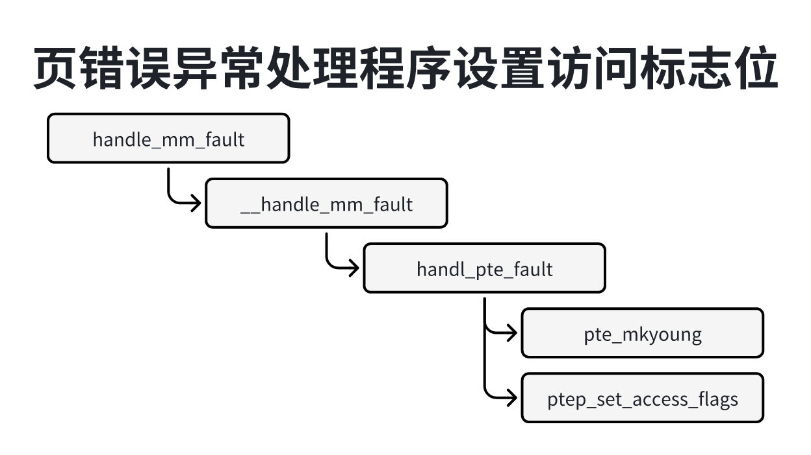
2）如果没有页表映射的文件页，进程通过系统调用read或write访问文件，文件系统在文件的也缓存中查找文件页，文件系统在文件的也缓存中查找文件页，为文件页的也描述符设置访问标志位PG_referenced，如下图所示，进程EXT4文件系统中的一个文件，函数mark_page_accessed为文件页的也描述符设置访问标志位。
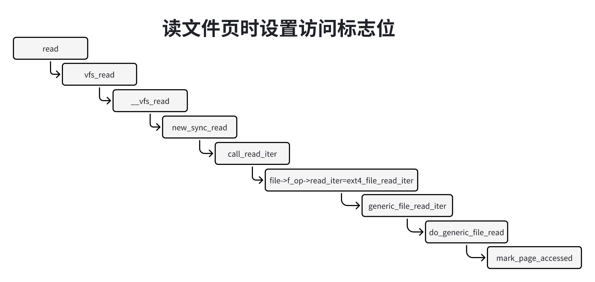
页描述符中核反向映射相关的成员如下：
x1// 位置：include/linnux/mm_types.h2
3struct page {4 ...5 union {6 struct address_space *mapping;7 ...8 };9 union {10 ...11 struct {12 union {13 atomic_t _mapcount;14 ...15 }; 16 ...17 };18 };19 ...20}成员mapping：利用指针总是4的整数倍特性，成员mapping最低两位用来作为页映射标志，最低位PAGE_MAPPING_ANON表示匿名页。
如果物理页是匿名页，page.mapping = （结构体anon_vma的地址|PAGE_MAPPING_ANON）。
如果物理页是文件页，page.mapping 指向结构体address_space。
成员index：成员_mapcount是映射计数，反应物理页被映射到多少个虚拟内存区域。初始值是-1，加上1以后才是真实的映射计数，建议使用内联函数page_mapcount获取页的映射计数。
匿名页的反向映射的数据结构如下图所示：
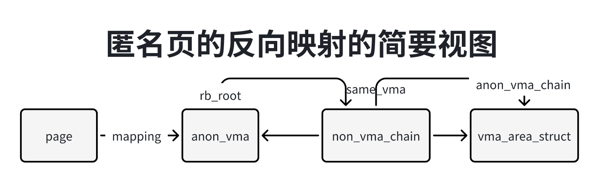
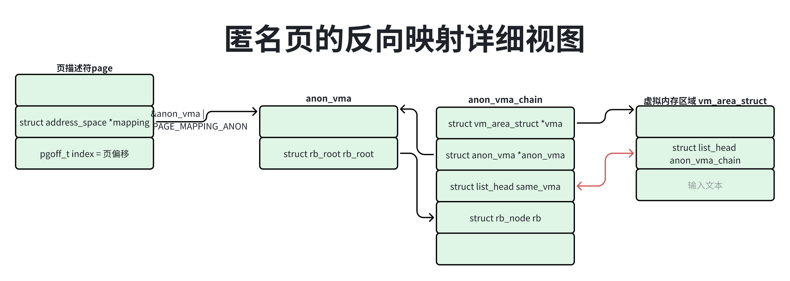
1）结构体page的成员mapping指向一个anon_vma实例，并且设置了PAGE_MAPPING_ANON标志位。
2）结构体anon_vma用来组织匿名页被映射到所有虚拟内存区域。
3）结构体anon_vma_chain充当中介，关联anon_vma实例和vma_area_struct实例。
4）一个匿名页可能被映射到多个虚拟内存区域，区间树是用红黑树实现的，annon_vma实例的成员rb_root指向区间树的根，中介anon_vma_chain的成员rb是红黑树的节点。
5）一个虚拟内存区域可能关联多个anon_vma实例，即父进程的anon_vma实例和当前进程的anon_vma实例。vm_area_struct实例通过中介anon_vma_chain把所有anon_vma实例放在一条链表中，成员anon_vma_chain是链表的头节点，中介anon_va_chain的成员same_vma是链表节点。
查询一个匿名页被映射到所有虚拟页的过程如下：
1）根据页描述符的成员mapping得到结构体anon_vma。
2）根据结构体anon_vma的成员rb_root得到区间树根。
3）通过遍历区间树可以得到物理页被映射到所有虚拟内存区域，从anon_vma_chain实例的成员vma得到vma_area_struct实例。
4）根据vm_area_struct实例的成员vm_start得到虚拟内存区域的其实地址，根据页描述符的成员index得到虚拟页在虚拟内存区域中的偏移，将两者相加得到虚拟页的其实地址。
5）根据vm_area_struct实例的成员vm_mm得到进程的内存描述符，根据内存描述符的成员pgd得到页全局目录的其实地址。
从一个进程分叉生成子进程的时候，子进程把父进程的虚拟内存完全复制一份，如下图所示，子进程把父进程的每个vm_area_struct实例复制一份，对每个vm_area_struct是执行下面操作：
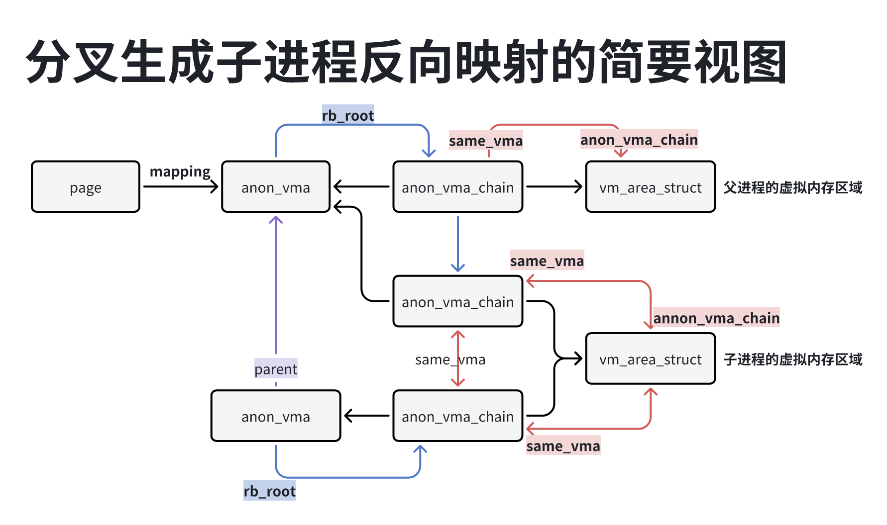
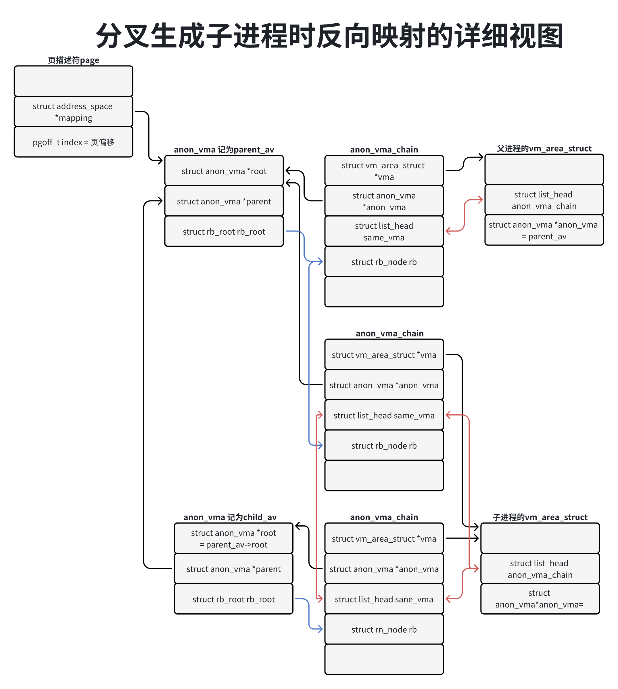
1）通过anon_vma_chain实例加入父进程的anon_vma实例的区间树中。
2）创建自己的anon_vma实例，把vm_area_struct实例加入anon_vma实例的区间树中。
3）vm_area_struct实例通过anon_vma_chain把父进程的anon_vma实例和自己的anon_vma实例放在一个双向链表中。
4）父子进程的anon_vma实例组成一棵树：子进程的anon_vma实例的成员parent指向父进程的anon_vma实例，成员rppt指向区间树的根。
文件页的反向映射的数据结构如下图所示：
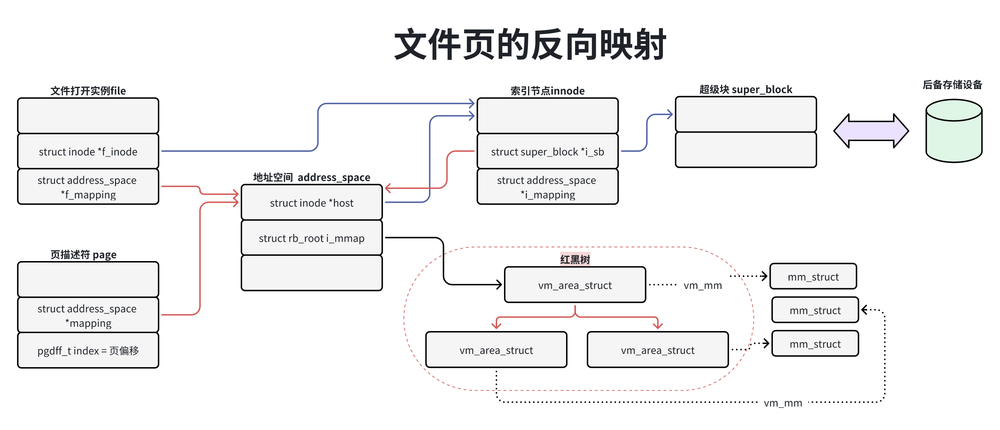
存储设备上的文件系统有一个描述文件系统信息的超级块，挂载文件系统时在内存中创建一个超级块的副本，即super_block实例。
文件系统中的每个文件有一个描述文件属性的索引节点，读文件时在内存中创建一个索引节点的副本，即inode实例，成员i_mapping指向已给地址空间结构体address_space。
打开文件时，在内存创建一个文件打开实例file，成员f_mapping继承inode实例的成员i_mapping。
读文件时，分配物理页，页描述符的成员mapping继承file实例的成员i_mapping，成员index是物理页存储的数据在文件中的偏移，单位是页。
每个文件有一个地址空间结构体address_space，用来建立数据缓存（在内存中为某种数据创建缓存）和数据来源（即存储设备）之间的关联。地址空间结构体address_space的成员i_mmap指向区间树，区间树是使用红黑树实现的，用来把文件区间映射到虚拟内存区域，索引是虚拟内存区域对应的文件页偏移（vm_area_struct.vm_pgoff）。
如下图所示，对于私有文件映射，在写的时候主要生成页错误异常，页错误异常处理程序执行写复制，新的物理页和文件脱离关系，属于匿名页。
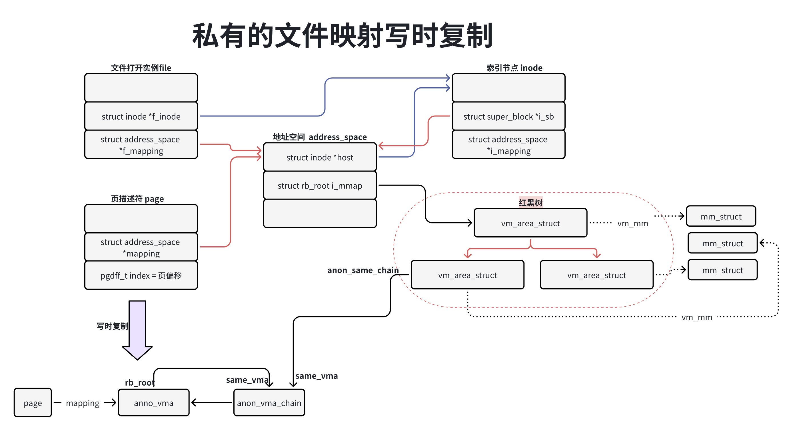
如下图所示，申请分配页的时候，页分配器首先尝试使用低水线分配页，如果使用低水线分配失败，说明内存轻微不足，页分配器将会唤醒所有复合分配条件的内存节点回收线程，异步回收页，然后尝试使用最低水线分配页。如果分配失败，说明内存严重不足，页分配器将会直接回收页。如果直接回收页失败，那么判断是否应该重新尝试回收页。
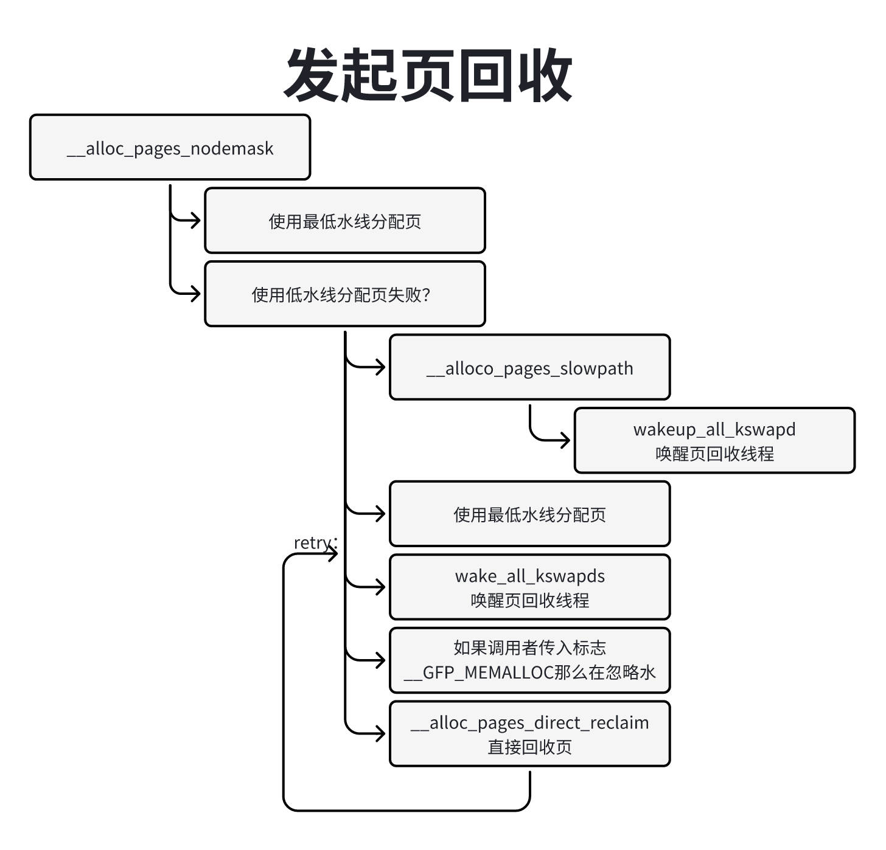
每个内存节点有一个页回收线程，执行流程如下图所示，如果内存节点所有内存区域的空闲页数小于高于水线，页回收线程就会反复尝试回收页，调用函数shrink_node以回收内存节点中的页。
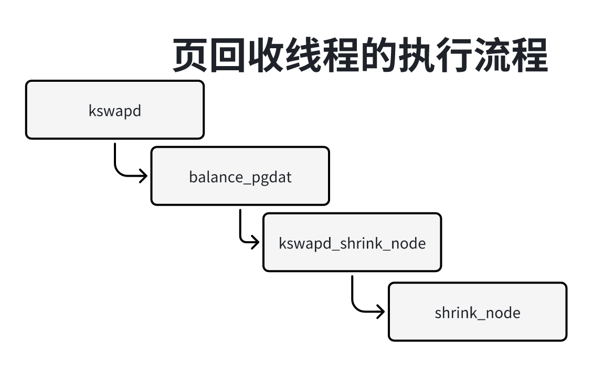
直接回收页的执行流程如下图所示，针对备用区域列表复合分配条件的每个内存区域，调用函数shrink_node来回收内存区域所属的内存节点中的页。
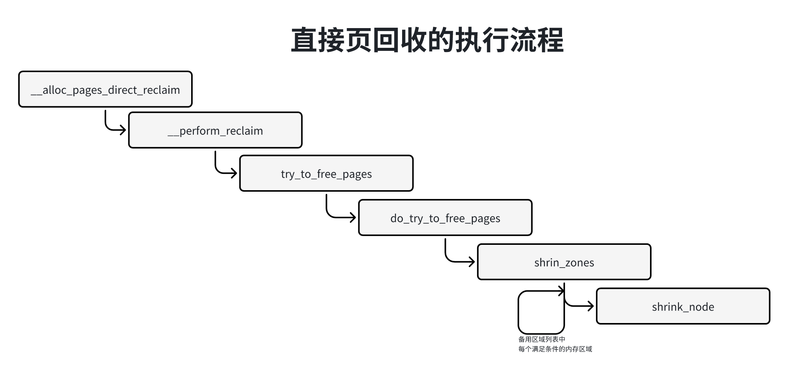
回收页时以内存节点为单位执行的，函数shrink_node负责回收内存节点中的页，执行流程如下图所示：
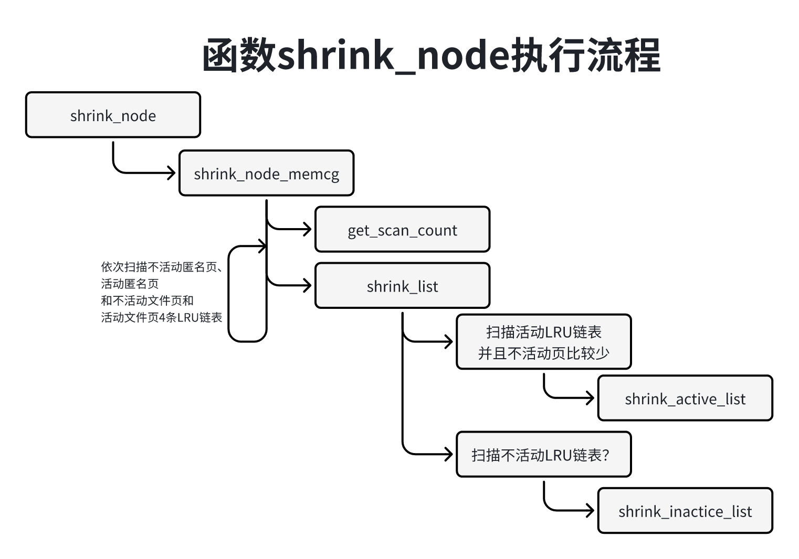
1）调用函数get_scan_count，计算需要扫描多少个不活动匿名页、活动匿名页、不活动文件页和活动文件页。
2）依次扫描不活动匿名页、活动匿名页、不活动文件页和活动文件页4条LRU链表，处理如下：
-> 如果是活动LRU链表，并且不活动页比较少，那么调用函数shrink_active_list，把一部分活动页转移到不活动链表中。
-> 如果是不活动LRU链表那么调用函数shrink_inactive_list以回收不活动页。
函数balance_pgdata和try_to_pages使用结构体scan_control控制扫描操作，这个结构体不仅用于高层函数向低层函数传毒控制指令，也用于反向传递结果，主要成员如下表：
| 成 员 | 说 明 |
|---|---|
| unsigned long nr_to_reclaim | 应该回收多少页，执行直接回收的时候取32页 |
| gfp_t gfp_mask | 申请分配页的掩码。调用者申请页时可能不允许向下调用底层文件系统，或者不允许读写存储设备，需要把这些约束传给页回收算法 |
| enum zone_type reclai_idx | 回收最高的内存区域 |
| int order | 申请分配页的阶数，必读调用者正在申请n阶页，仙姑回收算法能满足申请n阶页的请求 |
| nodemask_t *nodemask | 调用者允许扫描的内存节点的掩码，如果是空指针，表示扫描所有内存节点 |
| int priority | 扫描优先级，一次扫描的页数是（LRU链表的总页数 >> 扫描优先级） 初始值是12 |
| unsigned int may writepage:1 | 是否允许把修改过的文件页回收写到存储设备 |
| unsigned int may_unmmap:1 | 是否允许回收页表映射的物理页 |
| unsigned int may_swap:1 | 是否允许把匿名页换出到交换区 |
| unsigned long nr_scanned | 用来报告扫描过的也不活动页的数量 |
| unsigned long nr_reclaimed | 用来报告回收了多少页 |
函数should_reclaim_retry判断是否重试回收页，如果直接回收16次全部失败，或者即使回收所有回收的页，也还是无法满足水线，那么应该放弃重试回收，代码如下：
651// 位置：mm/page_alloc.c2
3static inline bool4should_reclaim_retry(gfp_t gfp_mask, unsigned order,5 struct alloc_context *ac, int alloc_flags,6 bool did_some_progress, int *no_progress_loops)7{8 struct zone *zone;9 struct zoneref *z;10
11 // 对于昂贵的分配，直接回收可能有进展，但不意味着申请的结束有可用的空闲页块，因为内存高度碎片化12 // 所以总司增加计数器no_progress_loops，no_progress_loops是直接回收没有进展的计数器13 if (did_some_progress && order <= PAGE_ALLOC_COSTLY_ORDER)14 *no_progress_loops = 0;15 else16 (*no_progress_loops)++;17
18 // 如果直接回收没有进展超过16次，那么检查高阶原子类型是否有空闲页，如果有，那么转换成申请迁移类型，然后重试分配。19 if (*no_progress_loops > MAX_RECLAIM_RETRIES) {20 return unreserve_highatomic_pageblock(ac, true);21 }22
23 // 针对每个目标区域进行处理24 for_each_zone_zonelist_nodemask(zone, z, ac->zonelist, ac->high_zoneidx,25 ac->nodemask) {26 unsigned long available;27 unsigned long reclaimable;28 unsigned long min_wmark = min_wmark_pages(zone);29 bool wmark;30
31 // 如果回收了所有可回收的页，空闲页数是否大于水线？如果大于，函数__zone_watermark_ok返回true32 available = reclaimable = zone_reclaimable_pages(zone);33 available += zone_page_state_snapshot(zone, NR_FREE_PAGES);34
35 wmark = __zone_watermark_ok(zone, order, min_wmark,36 ac_classzone_idx(ac), alloc_flags, available);37 trace_reclaim_retry_zone(z, order, reclaimable,38 available, min_wmark, *no_progress_loops, wmark);39 40 // 如果直接回收没有进展，并且脏页和正在回写的也在可回收页中的比例超过一半，那么应该等待回收完成41 // 使回收减速，组织过早杀死进程42 if (wmark) {43 if (!did_some_progress) {44 unsigned long write_pending;45
46 write_pending = zone_page_state_snapshot(zone,47 NR_ZONE_WRITE_PENDING);48
49 if (2 * write_pending > reclaimable) {50 congestion_wait(BLK_RW_ASYNC, HZ/10);51 return true;52 }53 }54
55 if (current->flags & PF_WQ_WORKER)56 schedule_timeout_uninterruptible(1);57 else58 cond_resched();59
60 return true;61 }62 }63
64 return false;65}页回收算法每次扫描多少页 ？扫描多少个匿名页和多少个文件页，怎么分配匿名页和文件页的比例？
扫描优先级用来孔子一次扫描的页数，如果扫描优先级是n，那么一次扫描的页数是（LRU链表中的总页数 >> n）可以看出：“扫描优先级的值越小，扫描的页越多”页回收算法默认优先级12开始，如果回收的页数没有达到目标，那么提高扫描优先级，把扫描优先级的值减1，然后继续扫描。扫描优先级最小值为0，表示扫描LRU链表中的所有页。
两个参数用来控制扫描的匿名页和文件页的比例：
1）参数“swappiness”控制换出匿名页的积极程度，取值烦我是0~100，值越大表示匿名页的比例越高，默认值60，可以通过“/proc/sys/vm/sweappiness”配置换出匿名页的积极程度。
2）针对匿名页和文件页分别统计最近扫描的页数和从不活动变为活动的页数，计算比例（从不活动变为活动的页数 / 最近扫描的页数）。如果匿名页的比例值比较大，说明匿名页的活动程度更好，文件页的活动程度比较低，那么应该降低扫描匿名页所占的比例，提高扫描文件页所占的比例。
函数get_scan_count针对不活动匿名页、活动匿名页、不活动文件页和活动文件页4条LRU链表，计算每条LRU链表需要扫描的页数，算法如下：
101anon_prio = swappiness2file_prio = 200 - anon_prio3 4ap = anoon_prio / (reclaim_stat->recent_rotated[0] / reclaim_stat->recent_scanned[0]) 5fp = file_prio / (reclain_stat -> recent_rotated[1] / reclain_stat->recent_scanned[1])6 7size = LRU链表中内存区域类型小于等于回收的最高区域类型的总页数8scan = size >> 扫描优先级9如果是匿名页 scan = scan * fp / (ap + fp)10如果是文件页 scan = scan * fp / (ap + fp)其中reclain_stat->recent_scanned[0]是最近扫描过的匿名页数量，reclaim_stat->recent_reotated[0]是欧聪不活动变为活动的匿名页数量；reclaim_state_scanned[1]是最近扫描过的文件页的数量，reclaim_stat->recent_rotated[1]是从不活动变为活动的文件页的数量。
当不活动页比较少的时候，页回收算法收缩活动页链表，也就是从活动页链表的尾部取物理页转移到不活动页链表中，把活动页转换成不活动页。
函数inactive_list_is_low判断不活动页是不是比较少，算法如下：
inactive = 不活动页链表中内存区域类型小于等于回收的最高区域类型的总页数
actice = 活动页链表中内存区域类型小于等于回收的最高区域类型的总页数
gb = 把（inactive + active）从页数转换成字节数， 单位是GB。
如果gb 大于 0
inactive_ratio =
否则
inactive_ratio = 1
如果（inactive * inactive_ratio < active），说明不活动页比较少。
函数shrink_active_list负责从活动页链表中转移物理页到不活动页链表中，有4个参数：
1）unsigned long nr_to_scan：指定扫描的页数。
2）struct lruvec *lruvec LRU向量的地址。
3）struct scan_control *sc：扫描控制结构体。
4）enum lru_list lru：LRU链表的索引，取值是LRU_ACTIVE_ANON（活动匿名页LRU链表）或LRU_ACTIVE_FILE（活动文件页LRU链表）
函数shrink_active_list执行流程如下图所示：
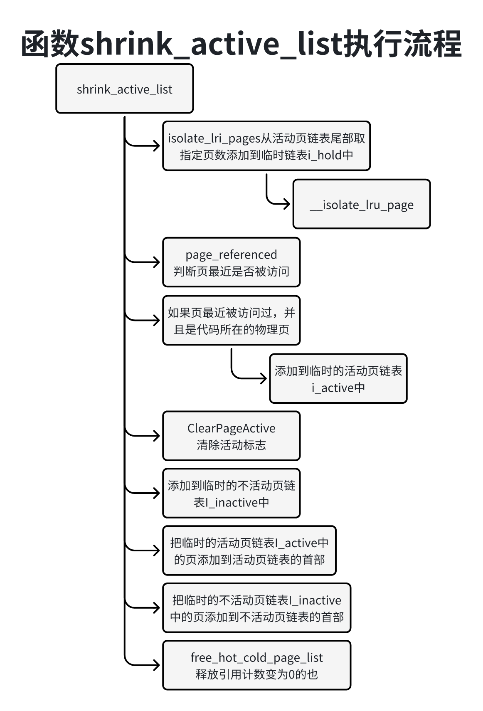
调用函数isolate_lr_pages，从活动页链表的尾部取指定页数添加到临时链表I_hold中，清除页的LRU标志位。页所属的内存区域必须小于等于回收的最高区域。
针对临时链表I_hold中的每个页处理如下：
调用函数page_frerenced来判断页最IN是否被访问过。
如果页最近被访问过，并且是程序的代码段所在的物理页，那么保留在活动页链表中，添加到临时的活动页链表I_active中。
将活动页转换成不活动页，清除匜的活动标志。
添加到临时的不活动页链表I_inactive中。
有些活动页保留页链表中 ，把临时的活动页链表I_active中的页添加到活动页链表的首部。
将有些活动页转换成不活动你也，把临时的不活动页链表I_inactive中的页添加到不活动页的首部。
调用函数free_hot_cold_page_list释放引用计数变为0的页，作为缓存冷页（即页的数据不在处理器的缓存中）释放。在回收的过程中，在其他地方可能已经释放了页，当页回收算法把页的引用计数减1的时候，发现引用计数变成了0，直接释放页。
将活动页转换成不活动你也得规则如下：
对有执行权限并且有存储设备支持的文件页（就是程序的代码段所在的物理页）做了特殊处理：如果页表设置了访问标志位，那么保留在活动页链表中；如果页表项没有设置访问标志位，那么转移到不活动页链表中。
如果是宁页或其他类型的文件页，转移到不活动页链表中。
为什么对代码段的物理页做了特殊处理呢？可能是因为考虑到有些共享库，比如C标准库，被很多进程丽娜姐，如果把这些共享库的代码段的物理页回收了，影响很大，每个进程执行时都会生成页错误异常，重新把共享库的虚拟页映射到物流页。
函数shrink_inactive_list负责回收不活动页，有4个参数：
1）unsigned long nr_to_scan：指定扫描的页数。
2）struct lruvec *lruvec：LRU向量的地址。
3）struct scan_control *sc：扫描控制结构体。
4）enum lru_list lru：LRU链表的索引，取值是LRU_INACTIVE_ANON（不活动匿名页LRU链表）或LRU_INACTIVE_FILE（不活动文件页LRU链表）。
函数shrink_inactice_list的执行流程如下图所示：
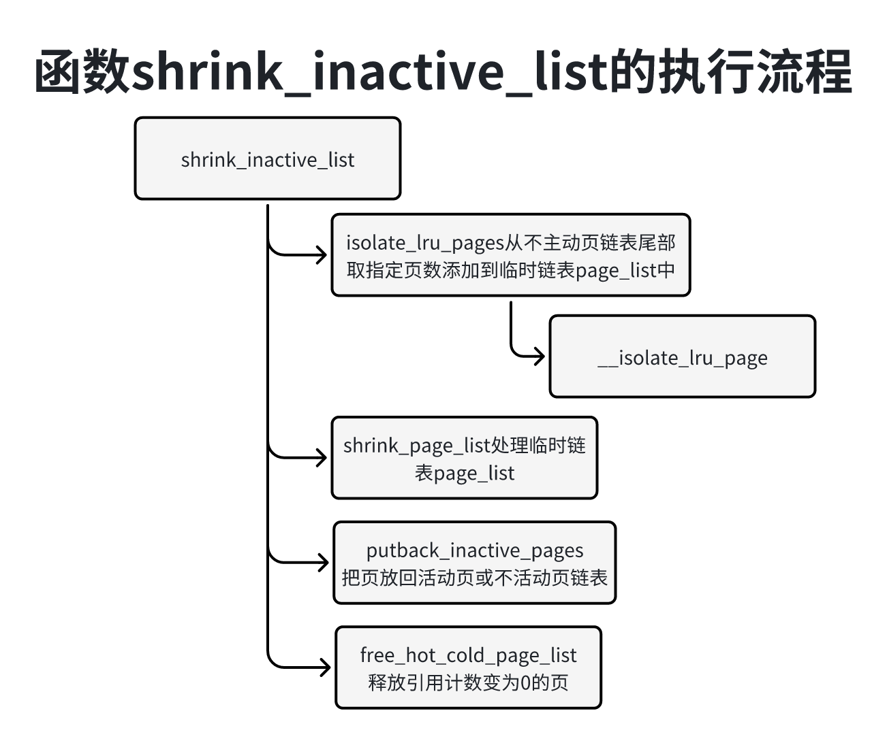
调用函数isolate_lru_pages，从不活动页链表的尾部指定页数添加到临时链表page_list中。
调用函数shrink_page_list来处理临时链表page_list中的所有页。
有些不活动页可能被转换成活动页，有些不活动页可能保留在不活动页链表中，调用函数putback_inactive_pages把这些不活动页回收到对应的链表中。
调用函数free_hot_cold_page_list释放引用计数变为0的页，作为缓存冷页释放。
回收不活动的主要工作是由函数shrink_page_list实现的，执行流程如图所示：
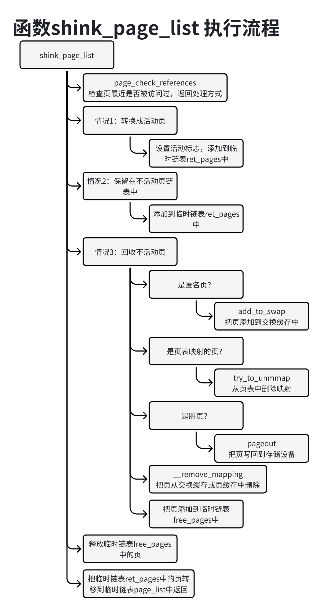
针对临时链表page_list中的每个页，执行下面的操作：
调用函数page_check_references，检查页最近是否被访问过，返回处理方式。
如果处理方式是转换成活动页，那么设置活动标志，添加到临时链表ret_pages中。
如果处理方式是保留在不活动页链表中，那么添加到临时链表ret_pages中。
如果处理方式是回收，执行下面的操作：
如果是匿名页，调用函数add_to_swap天骄到交换缓存中。
如果是页表映射的页，调用函数try_to_unmap，从页表中删除映射，通过反向映射的数据结构可以知道物理页被映射到哪些虚拟内存区域。
如果是脏页，调用函数pageout，把文件页写回到存储设备，或者把匿名页写回到交换区。
把页从交换缓存或页缓存中删除：如果是交换支持的也，从交换缓存中删除，如果是文件页，从文件的也缓存中删除。
把页添加到临时链表free_pages中。
释放临时链表free_pages中的页。
临时链表ret_pages存储转化成活动页或好留在不活动页链表中的不活动页，把临时链表ret_pages中的页转移到临时链表page_list中返回。
不活动页转换活动页的情况如下：
页表映射的页。
交换支持的页，如果页表项设置了访问标志位，那么将不活动页转换成活动页。
有存储设备支持的文件页，采用两次机会算法：如果页回收算法连续两次选中一个不活动页，并且每次不活动页最近被访问过，那么将不活动页转换成活动页。
对程序的代码段所在的也做了特殊处理：如果页表设置了访问标志位，那么将活动页转换成活动页。
没有页表映射的文件页。
采用两次机会算法：进程第一次访问时，如果页描述符没有设置访问标志位，那么设置访问标志位；进程第二次访问时，发现描述符设置了访问标志位，将不活动页转换成活动页。
不活动页保留在不活动页链表中或者回收的情况如下：
页表映射的不活动页。
如果页表项设置了访问标志位，那么页保留在不活动页链表中，清除页表项的范文标志位，给页描述符设置访问标志位。
如果页表项没有设置访问标志位，根据页的类型处理：
如果交换支持的页，立即回收。
存储设备支持的文件页：如果页描述符设置了访问标志位，那么只回收干净的页（页的数据自从读到内存中就没有被修改过），脏页（页的数据读到内存中之后被修改过）保留在不活动页链表中；如果页描述符没有设置访问标志位，那么立即回收。
没有页表项映射的文件页。
如果页描述符设置了访问标志位，那么只回收干净的也，脏页保留在不活动页链表中。
如果页描述符没有设置访问标志位，那么立即回收。
页交换（swap）的原理是：当内存不足的时候，把最近很少访问的没有存储设备支持的物流页的数据暂时保存到交换区的数据暂时保存到交换券，释放内存空间，当交换区中存储的页被访问的时候，再把数据从交换区读到内存中。
交换区可以是一个磁盘分区，也可以是存储设备上的一个文件。
编译内核时需要开启配置宏CONFIG_SWAP，默认开启。
使用磁盘分区作为交换区的配置方法如下。
1）使用fdisk命令（例如fdisk /dev/sds）创建磁盘分区，在fdisk中用“t”命令把分区类型修改为十六进制的数值82（Linux交换分区的类型），最后用“w”命令保存fdisk操作。
2）使用命令“mkswap”格式化交换分区，命令格式“mkswap[options]device[size]”。例如：假设交换分区是“/dev/sdal”，执行命令“mkswap /dev/sdal”以进行格式化。
3）使用命令“swapon”启用交换区，命令格式是“swapon[options]sepecialfile”。例如：假设交换分区是“/dev/sdal”执行命令“swapon /dev/sdal”启用交换区。
使用文件作为交换区的配置方法如下：
1）使用dd命令创建文件。例如，创建文件“root/swap”块长度是1MB，块的数量是2048，文件的长度是2048MB。 dd if=/dev/zero of=/root/swap bs = 1M count = 2048
2）使用命令“swapon”格式化文件。例如：mkswap /root/swap
3）使用命令“swapon”启用交换区。例如：swapon /root/swap
在内存比较小的设备上，可以使用ZRAM设备作为交换区。ZRAM是基于内存的块设备，写到ZRAM设备的页被压缩后存储在内存中，可以节省内存空间，相当与扩大内存容量。编译内核时需要开启配置宏CONFIG_ZRAM。配置方法如下：
1）如果把ZRAM编译成内核模块，可以使用命令“modprobe”加载模块，参数“num_devices”用来指定创建多少个ZRAM设备，默认值是1。
modprobe.zram_num_devices = 4
“num_devices=4”，表示创建4个ZRAM设备，设备名称是“/dev/zram{0,1,2,3}”。
2）指定ZRAM设备的容量，建议为总内存的10%~20%。如果是ZRAM设备的容量是zram_size，物理页的长度是page_size，那么ZRAM设备最多可以把（zram_size/page_size）个物理页的数据压缩后存储到内存中。
假设把ZRAM0设备的容量设置为512MB：echo512M > /sys/block/zram0/dissize
3）格式化ZRAM设备。假设格式化ZRAM0设备，mkswap/dev/zram0
4）启用交换区。假设启用ZRAM0设备：swapon/dev/zram0。
如果配置了多个交换区，可以使用命令“swapon”的选项“-p priority”指定交换区的优先级，取值范围是[0, 32767]，值越大表示优先级越高。
可以把交换区添加到文件“/etc/fstab”中，然后执行命令“swapoon -a”来启用文件“/etc/fstab”中的所有交换区。
可以使用命令”swapogg“禁止交换区。
可以执行命令”cat /proc/swaps“或”swapon -s“来查看交换区。
目前常用的存储设备是：机械硬盘、固态硬盘和NAND闪存。
固态硬盘私用NAND闪存作为存储介质，固态硬盘中的控制器运行闪存转换层固化程序，把闪存转换成块设备，使固态硬盘对表现为块设备。
NAND闪存的特点是：写入数据之前需要把擦除块擦除，每个擦除块的存储次数优有限，范围是105 ~ 106，频繁的写数据会缩短闪存的寿命。
所以，如果设备使用固态硬盘或NAND闪存存储数据，不适合启用交换区；如果设备使用机械硬盘存储数据，可以启用交换区。
交换区的缺点是读写速度慢，影响程序的执行性能，为了缓解这个问题，内核3.11版本引入zswap，它是叫唤页的轻量级压的缓存，目前还是实验特性。zswap把准备焕春的页压缩的动态分配的内存池，仅当压缩缓存的大小达到限制时才会把压缩缓存里面的页写到交换区。zswap以消耗处理器为代价，大幅度减少读写交换区的次数，带来了重大的性能提升，因为解压缩比从交换区读更快。
编译内核时需要开启配置宏CONFIG_ZSWAP。zswap默认是禁止的，可以使用模块参数”enabled“启用zswap：在引导内核时使用内核参数“zswap.enabled=1”或者在运行时 执行“echo 1 > /sys/module/zswap/parameters/enabled”。
可以使用模块参数“max_pool_percent”设置压缩缓存占用内存的最大百分比，默认值是20，例如：把压缩缓存占用内存的最大百分比设置成25%，可以在引导内核时使用内核参数“zswap.max_pool_percent=25”，或者在运行时执行“echo 25 > /sys/module/zswap/paramerters/max_pool_percent” 。
交换区格式：交换区的第一页是首部，内核使用数据结构swap_header描述郊区首部：
201// 位置：include/linux/swap.h2
3union swap_header{4 struct {5 char reserved[PAGE_SIZE - 10];6 char magic[10];7 } magic;8 9 struct {10 char bootbits[1024];11 __u32 version;12 __u32 last_papge;13 __u32 nr_badpages;14 15 unsigned char sws_uuid[16];16 unsigned char sws_volume[16];17 __u32 padding[117];18 __u32 badpages[1];19 } info;20};前面1024字节空闲，为引导程序预留空间，这种做法使得交换区可以处在磁盘的起始位置。
成员version是交换区的版本号。
成员last_page是最后一页的页号。
成员nr_badpages是坏页的数量，从成员badpages的位置开始存放坏页的页号。
最后10字节是魔幻数，用来区分交换区格式，内核已经不支持旧的格式“SWAP-SPACE”只支持格式“SWAOSOACE2”。
交换区信息：内核定义了交换区信息数组swap_info，每个数组存储一个交换区的信息。数组项的数量实在编译时由宏MAX_SWAPFILES指定的，通常是32，说明最多可以启用32个交换区。
31// 位置：mm/swap_file.c2
3struct swap_info_struct *swap_info[MAX_SWAPFILES];交换区分为多个连续的槽（slot）每个槽位的长度等于页的长度。
集群（cluster）由32（宏SWAPFILE_CLUSTER）个连续槽位组成，通过按顺序分配槽位把换出的也聚集在一起，避免分散到整个交换区。聚集带来的好处是可以把连续槽位按顺序写到存储设备上，对于机械硬盘，可以减少刺头寻找磁道的时间，提高写的性能。
交换区按优先级从高到低排序，首先从优先级高的交换区分配槽位，对于优先级相同的交换区，轮流从每个交换区分配槽位，每次从交换区分配到槽位之后，把交换区移到优先级相同的交换区的最后面。
结构体swap_info_struct描述交换区的信息，主要成员如下表所示：
| 成员 | 说明 |
|---|---|
| unsigned long flags | 标志位。常用的标志位： 1）SWP_USED：表示当前数组项处于使用状态。 2）SWP_WRITEOK：表示交换区可写，禁用交换区以后交换区不可写 3）SWP_BLKDEV：表示交换区是块设备，即磁盘分区 |
| signed short prio | 优先级 |
| struct plist_node list | 用来加入有效交换区链表，按优先级从高到低排序，头节点是swap_active_head。启用交换区以后交换区是有效的，禁用交换区以后交换区不在是有效的。 |
| struct plist_node avail_list | 交换区的索引 |
| unsigned int max | 交换区的最大页数，和成员pages不同的是：max不仅包括可用槽位，也包括损坏的或用于管理目的槽位。硬盘出现坏块情况很少见，所以max通常等于pages加1 |
| unsigned int pages | 交换区可用槽位的总数 |
| unsigned int inuse_pages | 交换区正在使用的页的数量 |
| unsigned char *swap_map | 交换映射，指向一个数组，每字节对应交换区中的每个槽位，低6位存储每个槽位的使用计数，也就是共享换出页的进程的数量，高2位是标志位，SWAP_HAS_CACHE表示页在交换缓存中 |
| unsigned int lowest bit | 数组swap_map中第一个空闲数组项的索引 |
| unsigned int highest_bit | 数组swap_map中最后一个空闲数组项的索引 |
| struct block_device *bdev | 指向块设备，如果交换区是磁盘分区，bdev指向磁盘分区对应的块设备；如果交换区是文件，bdev指向文件所在的块设备 |
| struct file *swap_file | 指向交换区关联的文件的打开实例。如果交换区诗词判分去，swap_file指向磁盘分区对应的块设备文件的打开实例；如果交换区是文件，swap_file指向文件的打开实例。 |
| unsigned int cluster_next | 当前聚焦中下一次分配的槽位索引 |
| unsigned int cluster_nr | 当前聚焦中可用的槽位的数量 |
| struct swap_extent fitst_swap_extent | 交换区间链表 |
交换区间：swap extent用来把交换区的连续槽位映射到连续的磁盘块，如果是交换区是磁盘分区，因为磁盘分区是连续的，所以只需要一个交换区间。如果交换区是文件，文件对应的磁盘块不一定是连续的，因此对于每个连续的磁盘块的范围，需要使用一个交换区间来存储交换区的连续槽位和磁盘块范围的映射关系。
如下图所示，交换区信息的成员first_swap_extent存储第一个交换区间的信息，交换区间的成员start_page是起始槽位的页号，成员nr_pages是槽位的数量，成员start_block是起始磁盘块号，成员list用来链接同一个交换区所有交换区间。
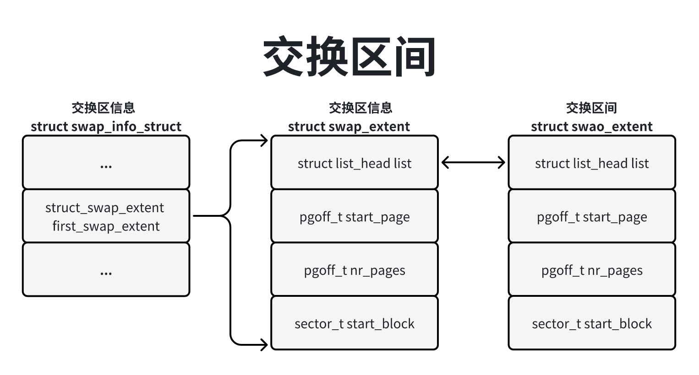
交换槽位缓存：为了加快为换出页分配交换槽位的速度，每个处理器有一页交换槽位缓存swp_slots，数据结构如下图所示：
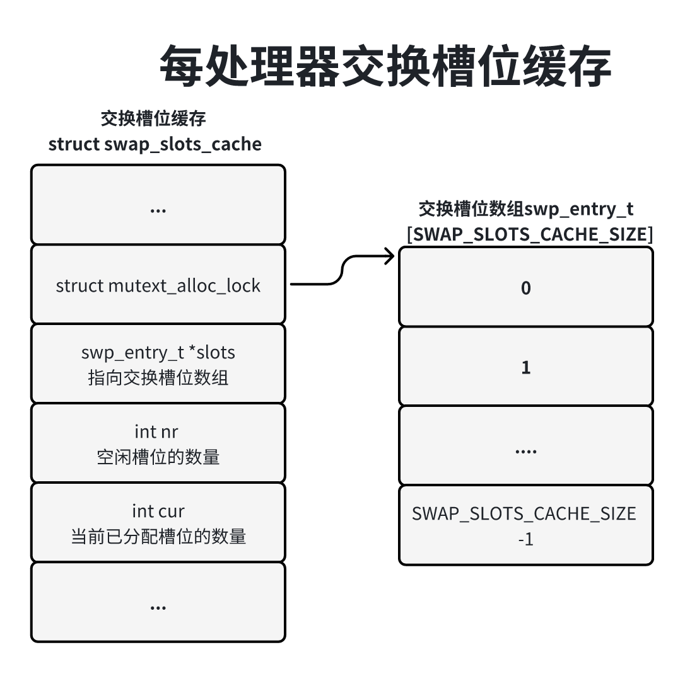
-> 成员slots：指向交换槽位数组，数组的大小是宏SWAP_SLOTS_CACHE_SIZE，即64。
-> 成员nr：是空闲槽位的数量。
-> 成员nur：是当前已经分配槽位的数量，也是下次分配的数组索引。
-> 成员alloc_lock：用来保护slots、nr和cur三个成员。
为换出页分配交换槽位的时候，首先从当前处理器的交换槽位缓存分配，如果交换槽位缓存没有空闲槽位，那么从交换区分配槽位以重新填充交换槽位缓存。
如果所有交换区的空闲槽位总数小于（在线处理器数量 * 2 * SWAP_SLOTS_CACHE_SIZE），那么禁止使用每处理器交换槽位缓存。
如果所有交换区的空闲槽位总数大于（在线处理器数量 * 5 * SWAP_SLOTS_CACHE_SIZE）， 那么启用每处理器交换槽位缓存。
交换项：内核定义了数据类型swp_entry_t来存储换出页在交换区中的位置，我们称为交换项，高7位存储交换区的索引，其他位存储页在交换区中的偏移（单位是页）。
51// 位置：include/linux/mm_types.h2
3typedef struct {4 unsigned long val;5} swp_entry_t;内核定义了3个内联函数。
1）swp_entr(type, offset)：把交换区的索引和偏移转换成交换项。
2）swp_type(entry)：用来从交换向提取索引字段。
3）swp_offset(entry)：用来从交换项提取偏移字段。
把匿名页换出到交换区的时候，需要再页表项中存储页在交换区中的位置，页表向存储交换区位置的格式由各种处理器架构自己定义， 数据类型swp_entry_t是处理器架构无关的，内核定义了两个内联函数以转换页表项和交换项：
1）swp_entry_to_pte(entry)：用来把交换项转换成页表项。
2）pte_to_swp_entry(pte)：用来把页表项转换成交换项。
如果页表项满足条件“!pte_none(pte) && !pte_present(pte)”，说明页被换出到交换区，其中“!pte_none(pte)”表示页表项不是空表项，“!pte_present(pte)”表示页不存在内存中。
交换缓存：每个交换区有若干个交换缓存，每214页对应一个交换缓存，交换缓存的数量是
为什么需要交换缓存？
换出页可能有多个线程共享，进程的页表项存储页在交换区中的位置。当某个进程访问页的数据时，把页从交换区换入内存中，把页表项指向的内存。问题是：其他进程怎么找到内存页？
从交换区换入页的时候，把页放在交换存中，直到共享一个页的所有进程请求换入页，直到这一页在内存中的新的位置为止，如果没有交换缓存，内核无法确定一个共享的内存页是不是已经换入内存中。
从交换区换入页的时候，把页放在交换缓存中，直到共享同一个页的所有进程请求换入页，直到这一页在内存中的新的位置为止，如果没有交换缓存，内核无法确定一个共享的内存页是不是已经换入内存中。
交换区信息结构体有一个交换映射，每个自己对应交换区中的每个槽位，低6位存储每个槽位使用的计数，也就是共享换出页的进程的数量 ，每当一个进程请求换入页的时候，就会把使用计数减1，减到0时说明共享内存所有进程已经请求换入页；高2位是标志位，SWAP+HAS_CACHE表示页在交换缓存中。
交换缓存时使用该地址空间结构体address_space实现的，用来把交换区的槽位映射到内存页，全局数组swapper_spaces存储每个交换区的交换地址空间数组的地址，全局数组nr_swapper_spaces存储每个交换区的交换缓存数量。
41// 位置：mm/swap_state.c2
3struct address_space *swapper_sapces[MAX_SWAPFILES];4struct unsigned int nr_swapper_spaces[MAX_SWAPFILES]; 如下图所示，全局数组swapper_spaces的每一项指向一个交换区的交换地址空间数组，数组的大小是
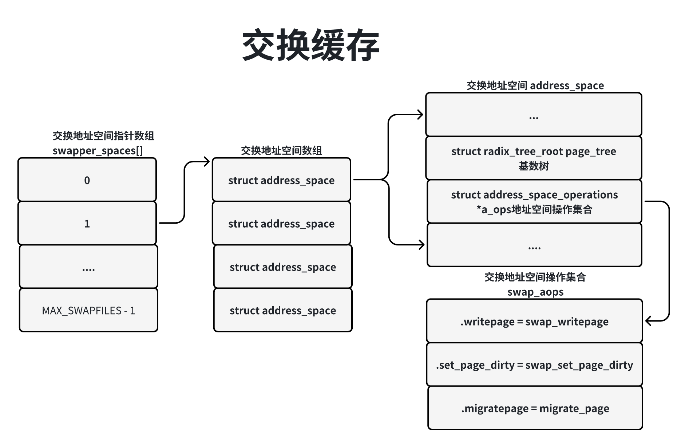
成员page_tree：基数树（radix tree）的根，用来把交换区的偏移映射到物理页的也描述符，内核的基数树是16叉树或64叉树。
成员a_ops：指向交换地址空间操作集合swap_aops，后者的writepage方法是函数swap_writepage，用来把页写到交换区。
宏swap_address_space(entry)用来获取交换项对应的交换地址空间：
51// 位置：include/linux/swap.h2
3>> SWAP_ADDRESS_SPACE_SHIFT])命令”swapon“通过系统调用sys_swapon启用交换区，系统调用sys_swapon有两个参数：
1）const char __user *speciall：文件路径。如果交换区是磁盘分区，文件路径是块设备文件的路径。
2）int swap_flags：标志位，其中第0~14位存储交换区的优先级，第15位指示是否指定了优先级。
系统调用sys_swapon的执行过程如下：
1）大勇函数alloc_swap_info，分配交换区信息结构体，在交换区信息数组中查找一个空闲的数组项，设置数组项指向刚分配的交换区信息结构体。
2）打开文件，设置交换区信息结构体的成员swap_file指向文件的打开实例。
3）调用函数claim_swapfile，设置交换区信息结构体的成员bdev：如果交换区是磁盘分区，指向磁盘分区对应的块设备；如果交换区是文件，指向文件所在块设备。
4）读入交换区的第一页，解析交换区的首部，得到交换区总也束河坏页数量。
5）调用函数setup_swap_map_and_extents，设置交换映射和交换区间。
6）调用函数init_swap_address_space，初始化交换区的交换缓存。
7）调用函数enable_swap_info处理如下：
-> 设置交换区的优先级：如果没有指定优先级，那么取全局变量least_priority减一以后的值，全局变量least_priority的初始值是0，可减优先级是一个负数。
-> 全局变量nr_swap_pages：存储所有交换区的空闲页的页数总和加上当前交换区的总页数。
-> 把交换区total_swap_pages：存储所有交换区的页数总和加上当前交换区的总页数。
-> 把交换区加入链表swap_active_head和swap_avail_head，按优先级从高到低排序。
函数shrink_inactive_list回收不活动匿名页的执行流程如下图所示：
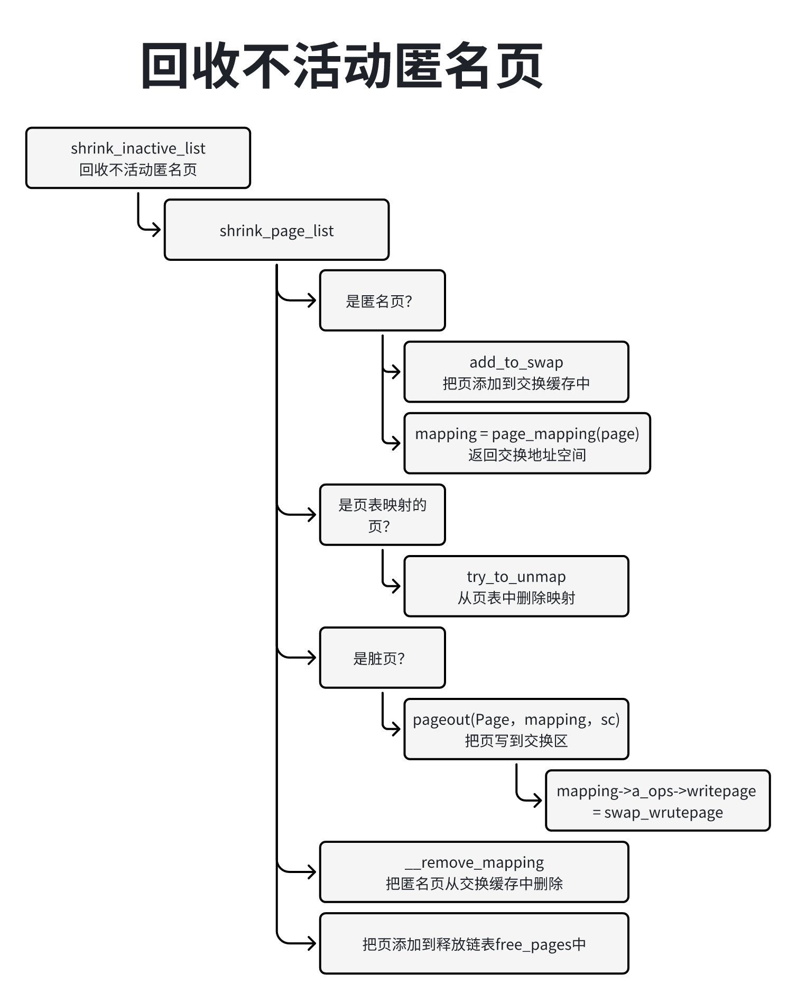
调用函数add_to_swap，从优先级最高的交换区分配到交换槽位，把页加入交换缓存。
调用函数page_mapping，获取交换地址空间。
调用函数try_to_unmap，根据反向映射的数据结构找到物理页被映射的所有虚拟页，针对每个虚拟页，指向操作：首先从进程的页表中删除旧的映射，如果页表项设置了脏标志位，那么把脏标志位转移到页描述符，然后再爱叫唤映射中把叫唤槽位的使用计数加1，最后在页表项中保存交换区的索引和偏移。
如果是脏页，调用函数pageout把页协会到存储设备，函数pageout调用交换地址空间的writepage方法swap_writepage，把页写到交换区。
调用函数__remove_mapping，把匿名页从交换缓存中删除。
把页添加到释放链表free_pages中。
函数add_to_swap执行流程如下：
调用函数get_swap_page，从优先级最高的交换区分配一个槽位。
如果是透明巨型页，拆分成普通页。
调用函数add_to_swap_cache，把页添加到交换缓存中，给页描述符设置标志位PG_swapcache，表示页在交换缓存中，页描述符的成员private存储交换项。
匿名页被换出到交换区以后，访问页时，生辰页错误异常 。如下图所示，函数handle_pte_fault发现“页表项不是空表项，但是页不在内存中“，直到页已经被换出到交换区，调用函数do_swap_page以把页从交换区读到内存中。
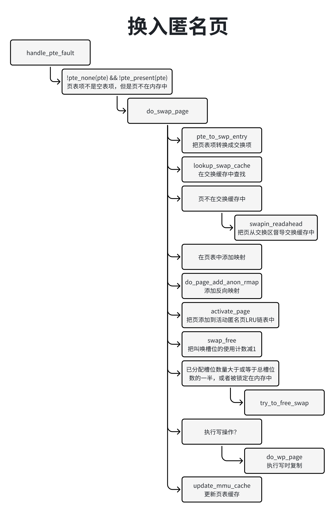
函数do_swap_page的执行流程如下：
调用函数pte_to_swap_entry，把页表转换成交换项，交换项包含了交换区的索引和偏移。
调用函数lookup_swap_cache，在交换缓存中根据交换区的偏移查找页。
如果页不在交换缓存中，那么调用函数swapin_readahead，把页从交换区读到交换缓存中。
在页表中添加映射。
调用函数do_page_add_anon_rmap，添加反向映射。
调用函数activate_page，把页忒能见到活动匿名页LRU链表中。
调用函数swap_free，在交换映射中把叫唤槽位的使用计数减1。
如果已分配槽位数量大于或等于总槽位数的一半，或者页被锁定在内存中，那么调用函数try_to_free_swap，尝试释放交换槽位：如果交换槽位的使用计数是0，那么把页从交换槽位中删除，并且释放交换槽位。
如果执行写操作，那么调用函数do_wp_page执行写时复制。
调用函数update_mmu_cache，更新页表缓存。
使用slab缓存的内核模式可以注册收缩器，页回收算法遍历收缩器链表，调用每个收缩器来收缩slab缓存，释放对象。
使用slab缓存的内核模块可以使用函数register-shrinker注册收缩器。
11int register_shrinker(struct shrinker *shrinker);使用函数unregister_shrinker注销收缩器。
11void unregister_shrinker(struct shrinker *shrinker);收缩器的数据结构如下：
171// 位置：include/linux/shrinker.h2
3struct shrinker{4 unsigned long (*count_objects)(struct shrinker *,5 struct shrinker_control *sc);6 unsigned long (*scan_objects)(struct shrinker *, 7 struct shrink_control *sc);8 9 int seeks;10 long batch;11 unsigned long flags;12 13 // 这些成员内部使用14 struct list_head list;15 atomic_long_t *nr_deferred;16 17};方法count_objects：返回可释放对象的数量。
方法scan_objects：释放对象，返回释放的对象数量，如果返回SHRINK_STOP，表示停止扫描。
成员seek：控制扫描的对象数量的因子，扫描的对象数量和这个因子成反比，即因为越大，扫描的对象越少，如果使用者不知道何时的数值，可以设置宏DEFAULT_SEEKS，值为2。
成员batch：批量释放的数量，如果是0，使用默认值128。
成员flags：标志位，目前定义了两个标志位，SHRINKER_NUMA_AWARE表示感知NUMA内存节点，SHRINKER_MEMCG_AWARE表示感知内存控制组。
成员list：内部使用的成员，用来把收缩器添加到收缩器链表中。
成员nr_deferred：内部使用的成员，记录每个内存节点延迟到下一次扫描的对象数量。
方法scan_objects的第二个参数sc用来控制信息，结构体shrink_control如下：
81// 位置：include/linnux/shrinker.h2
3struct shrink_control{4 gfp_t gfp_mask;5 unsigned long nr_to_scan;6 int nid;7 struct mem_cgroup * memcg;8};成员gfp_mask：分配掩码。
成员nr_to_scan：应该扫描的对象数量。
成员nid：对于感知的NUMA内存节点的收缩器，需要知道当前正在回收的内存节点的编号。
成员mermcg：对于感知内存控制组的收缩器，需要知道正在会受到内存控制组。
函数shrink+slab负责回收slab缓存，有5个参数：
1）gfp_t gfp_mask：分配掩码。
2）int nid：内存节点编号。
3）struct mem_cgroup *memcg：内存控制组。
4）unsigned long nr_scanned：在LRU链表中扫描过的页数。
5）unsigned long nr_eligible：LRU链表中复合扫描条件的总页数。
函数shrink_slab遍历收缩容器链表shrinker_list，针对每个收缩器，把主要工作委托给函数do_shrink_slab。函数do_shrink_slab代码如下：
951// 位置：mm/vnscan.c2
3static unsigned long do_shrink_slab(struct shrink_control *shrinkctl,4 struct shrinker *shrinker,5 unsigned long nr_scanned,6 unsigned long nr_eligible)7{8 unsigned long freed = 0;9 unsigned long long delta;10 long total_scan;11 long freeable;12 long nr;13 long new_nr;14 int nid = shrinkctl->nid;15 long batch_size = shrinker->batch ? shrinker->batch16 : SHRINK_BATCH;17 long scanned = 0, next_deferred;18
19 // 大勇收齐的count_obejcts方法，计算可释放对象的数量freeable20 freeable = shrinker->count_objects(shrinker, shrinkctl);21 if (freeable == 0)22 return 0;23
24
25 nr = atomic_long_xchg(&shrinker->nr_deferred[nid], 0);26
27 // 计算准备扫描的对象数量28 // total_can = 内存节点上次记录的延迟到下次扫描的对象数量29 // delta = freeable*(nr_scanned(nr_eligible+ 1) )* 4 / shrinker->seeks30 // totala_scan = total_sacn + dlta31 // 其中nr_scanned是LRU链表中扫描过的页数，nr_elgible是LRU链表中符合扫描条件的总页数32 total_scan = nr;33 delta = (4 * nr_scanned) / shrinker->seeks;34 delta *= freeable;35 do_div(delta, nr_eligible + 1);36 total_scan += delta;37 if (total_scan < 0) {38 pr_err("shrink_slab: %pF negative objects to delete nr=%ld\n",39 shrinker->scan_objects, total_scan);40 total_scan = freeable;41 next_deferred = nr;42 } else43 next_deferred = total_scan;44
45 // 如果delta 小于 （freeable/4）total_scan取toatal_scan和（freeable/2）的最小值46 if (delta < freeable / 4)47 total_scan = min(total_scan, freeable / 2);48
49 // 如果total_scan 大于freeable/2，total_scan取（freeable/2）50 if (total_scan > freeable * 2)51 total_scan = freeable * 2;52 53
54 trace_mm_shrink_slab_start(shrinker, shrinkctl, nr,55 nr_scanned, nr_eligible,56 freeable, delta, total_scan);57
58 // 如果total_scan大于等于批量值 或大于等于freeable执行循环59 while (total_scan >= batch_size ||60 total_scan >= freeable) {61 unsigned long ret;62 63 // 一次扫描的对象的数量是批量值和total_scan的较小值64 unsigned long nr_to_scan = min(batch_size, total_scan);65
66 shrinkctl->nr_to_scan = nr_to_scan;67 // 调用收缩器的scan_objects方法释放对象，返回释放的对象数量 如果返回SHRINK_STOP表示停止扫描68 ret = shrinker->scan_objects(shrinker, shrinkctl);69 if (ret == SHRINK_STOP)70 break;71 freed += ret;72
73 count_vm_events(SLABS_SCANNED, nr_to_scan);74 // total_scan 减去本次扫描的对象数量75 total_scan -= nr_to_scan;76 scanned += nr_to_scan;77
78 cond_resched();79 }80
81 if (next_deferred >= scanned)82 next_deferred -= scanned;83 else84 next_deferred = 0;85
86 // 本次没有用完的扫描计数值添加到shrinker->nr_deferred[nid]中87 if (next_deferred > 0)88 new_nr = atomic_long_add_return(next_deferred,89 &shrinker->nr_deferred[nid]);90 else91 new_nr = atomic_long_read(&shrinker->nr_deferred[nid]);92
93 trace_mm_shrink_slab_end(shrinker, nid, freed, nr, new_nr, total_scan);94 return freed;95}